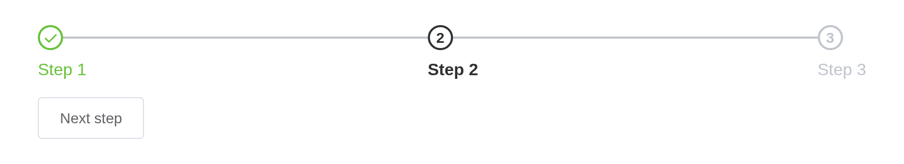

Guide the user to complete tasks in accordance with the process. Its steps can be set according to the actual application scenario and the number of the steps can’t be less than 2.
Basic usage
Simple step bar.
Set active attribute with Number type,
which indicates the index of steps and starts from 0. You can set
space attribute when the width of the step needs to be
fixed which accepts Number type. The unit of the
space attribute is px. If not set, it is
responsive. Setting the finish-status attribute can change
the state of the steps that have been completed.
The button moves it on with
update_el_steps(active =).
ui <- el_page(
el_steps(
"st_basic",
active = 0,
finish_status = "success",
width = "600px",
steps = list(el_step("Step 1"), el_step("Step 2"), el_step("Step 3"))
),
el_button("st_next", "Next step", style = "margin-top: 12px")
)
server <- function(input, output, session) {
active <- reactiveVal(0)
observeEvent(input$st_next, {
active(if (active() > 2) 0 else active() + 1)
update_el_steps(session, "st_basic", active = active())
})
}
shinyApp(ui, server)
Step bar that contains status
Shows the status of the step for each step.
Use title attribute to set the name of the step, or
override the attribute by using a named slot. We have
listed all the slot names for you at the end of this page.
el_steps(
"st_status",
active = 1,
space = 200,
finish_status = "success",
steps = list(
el_step("Done"),
el_step("Processing"),
el_step("Step 3")
)
)Center
Title and description can be centered.
el_steps(
"st_center",
active = 2,
align_center = TRUE,
steps = list(
el_step("Step 1", "Some description"),
el_step("Step 2", "Some description"),
el_step("Step 3", "Some description"),
el_step("Step 4", "Some description")
)
)Step bar with description
There is description for each step.
el_steps(
"st_desc",
active = 1,
steps = list(
el_step("Step 1", "Some description"),
el_step("Step 2", "Some description"),
el_step("Step 3", "Some description")
)
)Step bar with icon
A variety of custom icons can be used in the step bar.
The icon is set by the icon property. The types of icons
can be found in the document for the Icon component. In addition, you
can customize the icon through a named slot.
el_steps(
"st_icon",
active = 1,
steps = list(
el_step("Step 1", icon = "Edit"),
el_step("Step 2", icon = "Upload"),
el_step("Step 3", icon = "Picture")
)
)Vertical step bar
Vertical step bars.
You only need to set the direction attribute to
vertical in the el-steps element.
tags$div(
style = "height: 300px",
el_steps(
"st_vert",
direction = "vertical",
active = 1,
steps = list(
el_step("Step 1"),
el_step("Step 2"),
el_step("Step 3")
)
)
)Simple step bar
Simple step bars, where align-center,
description, direction and space
will be ignored.
tagList(
el_steps(
"st_simple",
active = 0,
simple = TRUE,
steps = list(
el_step("Step 1", icon = "Edit"),
el_step("Step 2", icon = "UploadFilled"),
el_step("Step 3", icon = "Picture")
)
),
tags$div(style = "margin-top: 20px"),
el_steps(
"st_simple2",
active = 0,
finish_status = "success",
simple = TRUE,
steps = list(
el_step("Step 1"),
el_step("Step 2"),
el_step("Step 3")
)
)
)API
Element Plus’s tables, and beside each entry where it is in R.
Steps Attributes
| Element | In R | Description | Type | Accepted | Default |
|---|---|---|---|---|---|
space |
space |
the spacing of each step, will be responsive if omitted. Supports percentage. | 1 / 2 | ’’ | |
direction |
direction |
display direction |
3'vertical' \\| 'horizontal'
|
horizontal | |
active |
active |
current activation step | 4 | 0 | |
process-status |
process_status |
status of current step |
5'wait' \\| 'process' \\| 'finish' \\| 'error' \\| 'success'
|
process | |
finish-status |
finish_status |
status of end step |
6'wait' \\| 'process' \\| 'finish' \\| 'error' \\| 'success'
|
finish | |
align-center |
align_center |
center title and description | 7 | — | |
simple |
simple |
whether to apply simple theme | 8 | — |
Steps Events
| Element | In R | Description |
|---|---|---|
change |
input$<id>_change, with
events = "change"
|
triggers when the active step changes |
Step Attributes
| Element | In R | Description | Type | Accepted | Default |
|---|---|---|---|---|---|
title |
el_step(title =) |
step title | 9 | ’’ | |
description |
el_step(description =) |
step description | 10 | ’’ | |
icon |
el_step(icon =) |
step custom icon. Icons can be passed via named slot as well | 11 / 12 | — | |
status |
el_step(status =) |
current status. It will be automatically set by Steps if not configured. |
13'' \\| 'wait' \\| 'process' \\| 'finish' \\| 'error' \\| 'success'
|
’’ |